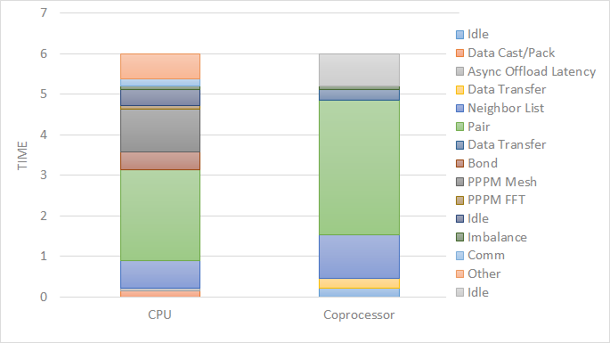

Return to Section accelerate overview
5.3.2. USER-INTEL package
The USER-INTEL package is maintained by Mike Brown at Intel Corporation. It provides two methods for accelerating simulations, depending on the hardware you have. The first is acceleration on Intel CPUs by running in single, mixed, or double precision with vectorization. The second is acceleration on Intel Xeon Phi coprocessors via offloading neighbor list and non-bonded force calculations to the Phi. The same C++ code is used in both cases. When offloading to a coprocessor from a CPU, the same routine is run twice, once on the CPU and once with an offload flag. This allows LAMMPS to run on the CPU cores and coprocessor cores simultaneously.
Currently Available USER-INTEL Styles:
- Angle Styles: charmm, harmonic
- Bond Styles: fene, fourier, harmonic
- Dihedral Styles: charmm, harmonic, opls
- Fixes: nve, npt, nvt, nvt/sllod, nve/asphere
- Improper Styles: cvff, harmonic
- Pair Styles: airebo, airebo/morse, buck/coul/cut, buck/coul/long, buck, dpd, eam, eam/alloy, eam/fs, gayberne, lj/charmm/coul/charmm, lj/charmm/coul/long, lj/cut, lj/cut/coul/long, lj/long/coul/long, rebo, sw, tersoff
- K-Space Styles: pppm, pppm/disp
Speed-ups to expect:
The speedups will depend on your simulation, the hardware, which styles are used, the number of atoms, and the floating-point precision mode. Performance improvements are shown compared to LAMMPS without using other acceleration packages as these are under active development (and subject to performance changes). The measurements were performed using the input files available in the src/USER-INTEL/TEST directory with the provided run script. These are scalable in size; the results given are with 512K particles (524K for Liquid Crystal). Most of the simulations are standard LAMMPS benchmarks (indicated by the filename extension in parenthesis) with modifications to the run length and to add a warmup run (for use with offload benchmarks).

Results are speedups obtained on Intel Xeon E5-2697v4 processors (code-named Broadwell), Intel Xeon Phi 7250 processors (code-named Knights Landing), and Intel Xeon Gold 6148 processors (code-named Skylake) with “June 2017” LAMMPS built with Intel Parallel Studio 2017 update 2. Results are with 1 MPI task per physical core. See src/USER-INTEL/TEST/README for the raw simulation rates and instructions to reproduce.
Accuracy and order of operations:
In most molecular dynamics software, parallelization parameters (# of MPI, OpenMP, and vectorization) can change the results due to changing the order of operations with finite-precision calculations. The USER-INTEL package is deterministic. This means that the results should be reproducible from run to run with the same parallel configurations and when using determinstic libraries or library settings (MPI, OpenMP, FFT). However, there are differences in the USER-INTEL package that can change the order of operations compared to LAMMPS without acceleration:
- Neighbor lists can be created in a different order
- Bins used for sorting atoms can be oriented differently
- The default stencil order for PPPM is 7. By default, LAMMPS will calculate other PPPM parameters to fit the desired accuracy with this order
- The newton setting applies to all atoms, not just atoms shared between MPI tasks
- Vectorization can change the order for adding pairwise forces
- When using the -DLMP_USE_MKL_RNG define (all included intel optimized makefiles do) at build time, the random number generator for dissipative particle dynamics (pair style dpd/intel) uses the Mersenne Twister generator included in the Intel MKL library (that should be more robust than the default Masaglia random number generator)
The precision mode (described below) used with the USER-INTEL package can change the accuracy of the calculations. For the default mixed precision option, calculations between pairs or triplets of atoms are performed in single precision, intended to be within the inherent error of MD simulations. All accumulation is performed in double precision to prevent the error from growing with the number of atoms in the simulation. Single precision mode should not be used without appropriate validation.
Quick Start for Experienced Users:
LAMMPS should be built with the USER-INTEL package installed. Simulations should be run with 1 MPI task per physical core, not hardware thread.
- Edit src/MAKE/OPTIONS/Makefile.intel_cpu_intelmpi as necessary.
- Set the environment variable KMP_BLOCKTIME=0
- “-pk intel 0 omp $t -sf intel” added to LAMMPS command-line
- $t should be 2 for Intel Xeon CPUs and 2 or 4 for Intel Xeon Phi
- For some of the simple 2-body potentials without long-range electrostatics, performance and scalability can be better with the “newton off” setting added to the input script
- For simulations on higher node counts, add “processors * * * grid numa” to the beginning of the input script for better scalability
- If using kspace_style pppm in the input script, add “kspace_modify diff ad” for better performance
For Intel Xeon Phi CPUs:
- Runs should be performed using MCDRAM.
For simulations using kspace_style pppm on Intel CPUs supporting AVX-512:
- Add “kspace_modify diff ad” to the input script
- The command-line option should be changed to “-pk intel 0 omp $r lrt yes -sf intel” where $r is the number of threads minus 1.
- Do not use thread affinity (set KMP_AFFINITY=none)
- The “newton off” setting may provide better scalability
For Intel Xeon Phi coprocessors (Offload):
- Edit src/MAKE/OPTIONS/Makefile.intel_coprocessor as necessary
- “-pk intel N omp 1” added to command-line where N is the number of coprocessors per node.
Required hardware/software:
In order to use offload to coprocessors, an Intel Xeon Phi coprocessor and an Intel compiler are required. For this, the recommended version of the Intel compiler is 14.0.1.106 or versions 15.0.2.044 and higher.
Although any compiler can be used with the USER-INTEL package, currently, vectorization directives are disabled by default when not using Intel compilers due to lack of standard support and observations of decreased performance. The OpenMP standard now supports directives for vectorization and we plan to transition the code to this standard once it is available in most compilers. We expect this to allow improved performance and support with other compilers.
For Intel Xeon Phi x200 series processors (code-named Knights Landing), there are multiple configuration options for the hardware. For best performance, we recommend that the MCDRAM is configured in “Flat” mode and with the cluster mode set to “Quadrant” or “SNC4”. “Cache” mode can also be used, although the performance might be slightly lower.
Notes about Simultaneous Multithreading:
Modern CPUs often support Simultaneous Multithreading (SMT). On Intel processors, this is called Hyper-Threading (HT) technology. SMT is hardware support for running multiple threads efficiently on a single core. Hardware threads or logical cores are often used to refer to the number of threads that are supported in hardware. For example, the Intel Xeon E5-2697v4 processor is described as having 36 cores and 72 threads. This means that 36 MPI processes or OpenMP threads can run simultaneously on separate cores, but that up to 72 MPI processes or OpenMP threads can be running on the CPU without costly operating system context switches.
Molecular dynamics simulations will often run faster when making use of SMT. If a thread becomes stalled, for example because it is waiting on data that has not yet arrived from memory, another thread can start running so that the CPU pipeline is still being used efficiently. Although benefits can be seen by launching a MPI task for every hardware thread, for multinode simulations, we recommend that OpenMP threads are used for SMT instead, either with the USER-INTEL package, USER-OMP package, or KOKKOS package. In the example above, up to 36X speedups can be observed by using all 36 physical cores with LAMMPS. By using all 72 hardware threads, an additional 10-30% performance gain can be achieved.
The BIOS on many platforms allows SMT to be disabled, however, we do not recommend this on modern processors as there is little to no benefit for any software package in most cases. The operating system will report every hardware thread as a separate core allowing one to determine the number of hardware threads available. On Linux systems, this information can normally be obtained with:
cat /proc/cpuinfo
Building LAMMPS with the USER-INTEL package:
Note
See the src/USER-INTEL/README file for additional flags that might be needed for best performance on Intel server processors code-named “Skylake”.
The USER-INTEL package must be installed into the source directory:
make yes-user-intel
Several example Makefiles for building with the Intel compiler are included with LAMMPS in the src/MAKE/OPTIONS/ directory:
Makefile.intel_cpu_intelmpi # Intel Compiler, Intel MPI, No Offload
Makefile.knl # Intel Compiler, Intel MPI, No Offload
Makefile.intel_cpu_mpich # Intel Compiler, MPICH, No Offload
Makefile.intel_cpu_openpmi # Intel Compiler, OpenMPI, No Offload
Makefile.intel_coprocessor # Intel Compiler, Intel MPI, Offload
Makefile.knl is identical to Makefile.intel_cpu_intelmpi except that it explicitly specifies that vectorization should be for Intel Xeon Phi x200 processors making it easier to cross-compile. For users with recent installations of Intel Parallel Studio, the process can be as simple as:
make yes-user-intel
source /opt/intel/parallel_studio_xe_2016.3.067/psxevars.sh
# or psxevars.csh for C-shell
make intel_cpu_intelmpi
Alternatively this can be done as a single command with suitable make command invocations. This is discussed in Section 4 of the manual.
Note that if you build with support for a Phi coprocessor, the same binary can be used on nodes with or without coprocessors installed. However, if you do not have coprocessors on your system, building without offload support will produce a smaller binary.
The general requirements for Makefiles with the USER-INTEL package are as follows. When using Intel compilers, “-restrict” is required and “-qopenmp” is highly recommended for CCFLAGS and LINKFLAGS. CCFLAGS should include “-DLMP_INTEL_USELRT” (unless POSIX Threads are not supported in the build environment) and “-DLMP_USE_MKL_RNG” (unless Intel Math Kernel Library (MKL) is not available in the build environment). For Intel compilers, LIB should include “-ltbbmalloc” or if the library is not available, “-DLMP_INTEL_NO_TBB” can be added to CCFLAGS. For builds supporting offload, “-DLMP_INTEL_OFFLOAD” is required for CCFLAGS and “-qoffload” is required for LINKFLAGS. Other recommended CCFLAG options for best performance are “-O2 -fno-alias -ansi-alias -qoverride-limits fp-model fast=2 -no-prec-div”.
Note
The vectorization and math capabilities can differ depending on the CPU. For Intel compilers, the “-x” flag specifies the type of processor for which to optimize. “-xHost” specifies that the compiler should build for the processor used for compiling. For Intel Xeon Phi x200 series processors, this option is “-xMIC-AVX512”. For fourth generation Intel Xeon (v4/Broadwell) processors, “-xCORE-AVX2” should be used. For older Intel Xeon processors, “-xAVX” will perform best in general for the different simulations in LAMMPS. The default in most of the example Makefiles is to use “-xHost”, however this should not be used when cross-compiling.
Running LAMMPS with the USER-INTEL package:
Running LAMMPS with the USER-INTEL package is similar to normal use with the exceptions that one should 1) specify that LAMMPS should use the USER-INTEL package, 2) specify the number of OpenMP threads, and 3) optionally specify the specific LAMMPS styles that should use the USER-INTEL package. 1) and 2) can be performed from the command-line or by editing the input script. 3) requires editing the input script. Advanced performance tuning options are also described below to get the best performance.
When running on a single node (including runs using offload to a coprocessor), best performance is normally obtained by using 1 MPI task per physical core and additional OpenMP threads with SMT. For Intel Xeon processors, 2 OpenMP threads should be used for SMT. For Intel Xeon Phi CPUs, 2 or 4 OpenMP threads should be used (best choice depends on the simulation). In cases where the user specifies that LRT mode is used (described below), 1 or 3 OpenMP threads should be used. For multi-node runs, using 1 MPI task per physical core will often perform best, however, depending on the machine and scale, users might get better performance by decreasing the number of MPI tasks and using more OpenMP threads. For performance, the product of the number of MPI tasks and OpenMP threads should not exceed the number of available hardware threads in almost all cases.
Note
Setting core affinity is often used to pin MPI tasks and OpenMP threads to a core or group of cores so that memory access can be uniform. Unless disabled at build time, affinity for MPI tasks and OpenMP threads on the host (CPU) will be set by default on the host when using offload to a coprocessor. In this case, it is unnecessary to use other methods to control affinity (e.g. taskset, numactl, I_MPI_PIN_DOMAIN, etc.). This can be disabled with the no_affinity option to the package intel command or by disabling the option at build time (by adding -DINTEL_OFFLOAD_NOAFFINITY to the CCFLAGS line of your Makefile). Disabling this option is not recommended, especially when running on a machine with Intel Hyper-Threading technology disabled.
Run with the USER-INTEL package from the command line:
To enable USER-INTEL optimizations for all available styles used in the input script, the “-sf intel” command-line switch can be used without any requirement for editing the input script. This switch will automatically append “intel” to styles that support it. It also invokes a default command: package intel 1. This package command is used to set options for the USER-INTEL package. The default package command will specify that USER-INTEL calculations are performed in mixed precision, that the number of OpenMP threads is specified by the OMP_NUM_THREADS environment variable, and that if coprocessors are present and the binary was built with offload support, that 1 coprocessor per node will be used with automatic balancing of work between the CPU and the coprocessor.
You can specify different options for the USER-INTEL package by using the “-pk intel Nphi” command-line switch with keyword/value pairs as specified in the documentation. Here, Nphi = # of Xeon Phi coprocessors/node (ignored without offload support). Common options to the USER-INTEL package include omp to override any OMP_NUM_THREADS setting and specify the number of OpenMP threads, mode to set the floating-point precision mode, and lrt to enable Long-Range Thread mode as described below. See the package intel command for details, including the default values used for all its options if not specified, and how to set the number of OpenMP threads via the OMP_NUM_THREADS environment variable if desired.
Examples (see documentation for your MPI/Machine for differences in launching MPI applications):
mpirun -np 72 -ppn 36 lmp_machine -sf intel -in in.script # 2 nodes, 36 MPI tasks/node, $OMP_NUM_THREADS OpenMP Threads
mpirun -np 72 -ppn 36 lmp_machine -sf intel -in in.script -pk intel 0 omp 2 mode double # Don't use any coprocessors that might be available, use 2 OpenMP threads for each task, use double precision
Or run with the USER-INTEL package by editing an input script:
As an alternative to adding command-line arguments, the input script can be edited to enable the USER-INTEL package. This requires adding the package intel command to the top of the input script. For the second example above, this would be:
package intel 0 omp 2 mode double
To enable the USER-INTEL package only for individual styles, you can add an “intel” suffix to the individual style, e.g.:
pair_style lj/cut/intel 2.5
Alternatively, the suffix intel command can be added to the input script to enable USER-INTEL styles for the commands that follow in the input script.
Tuning for Performance:
Note
The USER-INTEL package will perform better with modifications to the input script when PPPM is used: kspace_modify diff ad should be added to the input script.
Long-Range Thread (LRT) mode is an option to the package intel command that can improve performance when using PPPM for long-range electrostatics on processors with SMT. It generates an extra pthread for each MPI task. The thread is dedicated to performing some of the PPPM calculations and MPI communications. This feature requires setting the preprocessor flag -DLMP_INTEL_USELRT in the makefile when compiling LAMMPS. It is unset in the default makefiles (Makefile.mpi and Makefile.serial) but it is set in all makefiles tuned for the USER-INTEL package. On Intel Xeon Phi x200 series CPUs, the LRT feature will likely improve performance, even on a single node. On Intel Xeon processors, using this mode might result in better performance when using multiple nodes, depending on the specific machine configuration. To enable LRT mode, specify that the number of OpenMP threads is one less than would normally be used for the run and add the “lrt yes” option to the “-pk” command-line suffix or “package intel” command. For example, if a run would normally perform best with “-pk intel 0 omp 4”, instead use “-pk intel 0 omp 3 lrt yes”. When using LRT, you should set the environment variable “KMP_AFFINITY=none”. LRT mode is not supported when using offload.
Note
Changing the newton setting to off can improve performance and/or scalability for simple 2-body potentials such as lj/cut or when using LRT mode on processors supporting AVX-512.
Not all styles are supported in the USER-INTEL package. You can mix the USER-INTEL package with styles from the OPT package or the USER-OMP package. Of course, this requires that these packages were installed at build time. This can performed automatically by using “-sf hybrid intel opt” or “-sf hybrid intel omp” command-line options. Alternatively, the “opt” and “omp” suffixes can be appended manually in the input script. For the latter, the package omp command must be in the input script or the “-pk omp Nt” command-line switch must be used where Nt is the number of OpenMP threads. The number of OpenMP threads should not be set differently for the different packages. Note that the suffix hybrid intel omp command can also be used within the input script to automatically append the “omp” suffix to styles when USER-INTEL styles are not available.
Note
For simulations on higher node counts, add processors * * * grid numa to the beginning of the input script for better scalability.
When running on many nodes, performance might be better when using fewer OpenMP threads and more MPI tasks. This will depend on the simulation and the machine. Using the verlet/split run style might also give better performance for simulations with PPPM electrostatics. Note that this is an alternative to LRT mode and the two cannot be used together.
Currently, when using Intel MPI with Intel Xeon Phi x200 series CPUs, better performance might be obtained by setting the environment variable “I_MPI_SHM_LMT=shm” for Linux kernels that do not yet have full support for AVX-512. Runs on Intel Xeon Phi x200 series processors will always perform better using MCDRAM. Please consult your system documentation for the best approach to specify that MPI runs are performed in MCDRAM.
Tuning for Offload Performance:
The default settings for offload should give good performance.
When using LAMMPS with offload to Intel coprocessors, best performance will typically be achieved with concurrent calculations performed on both the CPU and the coprocessor. This is achieved by offloading only a fraction of the neighbor and pair computations to the coprocessor or using hybrid pair styles where only one style uses the “intel” suffix. For simulations with long-range electrostatics or bond, angle, dihedral, improper calculations, computation and data transfer to the coprocessor will run concurrently with computations and MPI communications for these calculations on the host CPU. This is illustrated in the figure below for the rhodopsin protein benchmark running on E5-2697v2 processors with a Intel Xeon Phi 7120p coprocessor. In this plot, the vertical access is time and routines running at the same time are running concurrently on both the host and the coprocessor.
The fraction of the offloaded work is controlled by the balance keyword in the package intel command. A balance of 0 runs all calculations on the CPU. A balance of 1 runs all supported calculations on the coprocessor. A balance of 0.5 runs half of the calculations on the coprocessor. Setting the balance to -1 (the default) will enable dynamic load balancing that continously adjusts the fraction of offloaded work throughout the simulation. Because data transfer cannot be timed, this option typically produces results within 5 to 10 percent of the optimal fixed balance.
If running short benchmark runs with dynamic load balancing, adding a short warm-up run (10-20 steps) will allow the load-balancer to find a near-optimal setting that will carry over to additional runs.
The default for the package intel command is to have all the MPI tasks on a given compute node use a single Xeon Phi coprocessor. In general, running with a large number of MPI tasks on each node will perform best with offload. Each MPI task will automatically get affinity to a subset of the hardware threads available on the coprocessor. For example, if your card has 61 cores, with 60 cores available for offload and 4 hardware threads per core (240 total threads), running with 24 MPI tasks per node will cause each MPI task to use a subset of 10 threads on the coprocessor. Fine tuning of the number of threads to use per MPI task or the number of threads to use per core can be accomplished with keyword settings of the package intel command.
The USER-INTEL package has two modes for deciding which atoms will be handled by the coprocessor. This choice is controlled with the ghost keyword of the package intel command. When set to 0, ghost atoms (atoms at the borders between MPI tasks) are not offloaded to the card. This allows for overlap of MPI communication of forces with computation on the coprocessor when the newton setting is “on”. The default is dependent on the style being used, however, better performance may be achieved by setting this option explicitly.
When using offload with CPU Hyper-Threading disabled, it may help performance to use fewer MPI tasks and OpenMP threads than available cores. This is due to the fact that additional threads are generated internally to handle the asynchronous offload tasks.
If pair computations are being offloaded to an Intel Xeon Phi coprocessor, a diagnostic line is printed to the screen (not to the log file), during the setup phase of a run, indicating that offload mode is being used and indicating the number of coprocessor threads per MPI task. Additionally, an offload timing summary is printed at the end of each run. When offloading, the frequency for atom sorting is changed to 1 so that the per-atom data is effectively sorted at every rebuild of the neighbor lists. All the available coprocessor threads on each Phi will be divided among MPI tasks, unless the tptask option of the “-pk intel” command-line switch is used to limit the coprocessor threads per MPI task.
5.3.2.1. Restrictions
When offloading to a coprocessor, hybrid styles that require skip lists for neighbor builds cannot be offloaded. Using hybrid/overlay is allowed. Only one intel accelerated style may be used with hybrid styles. Special_bonds exclusion lists are not currently supported with offload, however, the same effect can often be accomplished by setting cutoffs for excluded atom types to 0. None of the pair styles in the USER-INTEL package currently support the “inner”, “middle”, “outer” options for rRESPA integration via the run_style respa command; only the “pair” option is supported.
References:
- Brown, W.M., Carrillo, J.-M.Y., Mishra, B., Gavhane, N., Thakker, F.M., De Kraker, A.R., Yamada, M., Ang, J.A., Plimpton, S.J., “Optimizing Classical Molecular Dynamics in LAMMPS,” in Intel Xeon Phi Processor High Performance Programming: Knights Landing Edition, J. Jeffers, J. Reinders, A. Sodani, Eds. Morgan Kaufmann.
- Brown, W. M., Semin, A., Hebenstreit, M., Khvostov, S., Raman, K., Plimpton, S.J. Increasing Molecular Dynamics Simulation Rates with an 8-Fold Increase in Electrical Power Efficiency. 2016 High Performance Computing, Networking, Storage and Analysis, SC16: International Conference (pp. 82-95).
- Brown, W.M., Carrillo, J.-M.Y., Gavhane, N., Thakkar, F.M., Plimpton, S.J. Optimizing Legacy Molecular Dynamics Software with Directive-Based Offload. Computer Physics Communications. 2015. 195: p. 95-101.